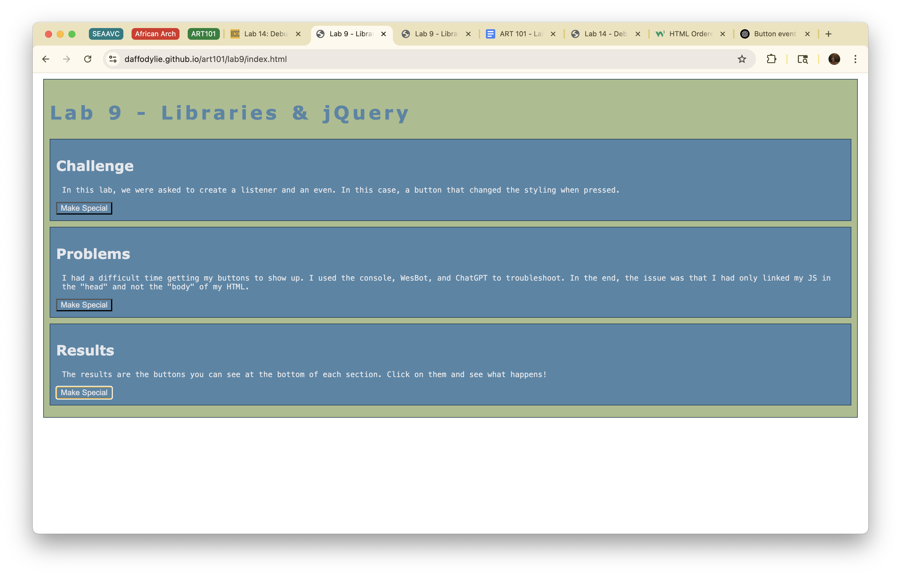
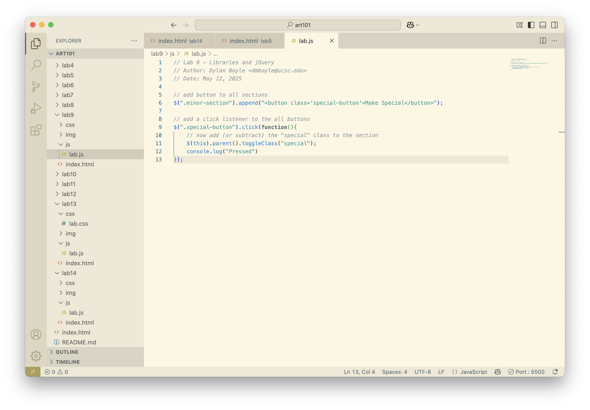

Lab 14 - Debugging Tools & Strategies
Challenge
Go through our past labs, find an issue, and debug it.
Problems
I didn't have any problems with this lab, the debugging process was easier than expected.
Debugging
I looked through my past labs to see if I could find any errors, and found that two of my buttons for lab 9 had broken. I believe it got messed up when I was trying to streamline my code for the bonus task. I did the following to diagnose the problem and fix it:
- Added console.log("Pressed") to the event listener, and clicked the buttons with the console open. This showed me that the second and third buttons were not connected to the listener.
- Looked over the code. Didn't see any obvious issues
- Consulted ChatGPT. It told me that the event listeners were selecting the buttons' ID, and that an ID can only be selected once.
- Changed the event listener to select the buttons' class
- Retried the buttons. They work now!
Results
The fixed page and it's source code:
 